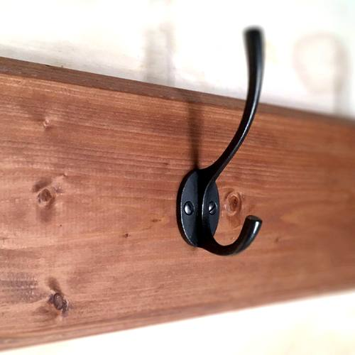
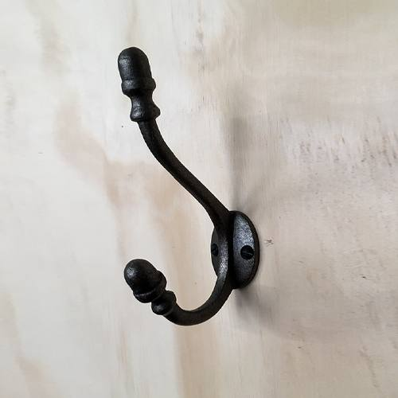
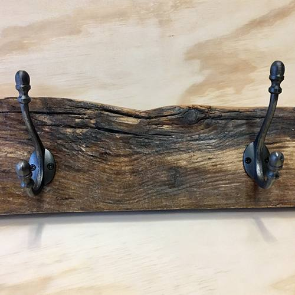
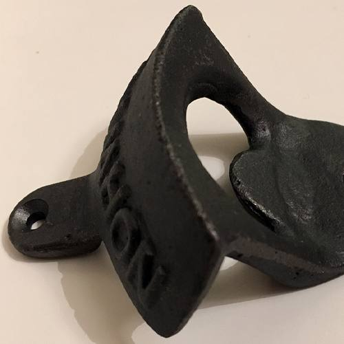
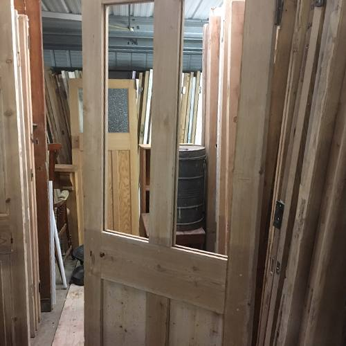
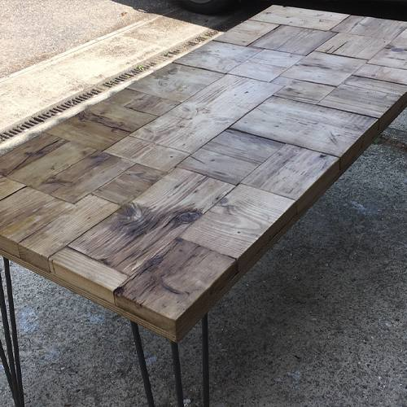
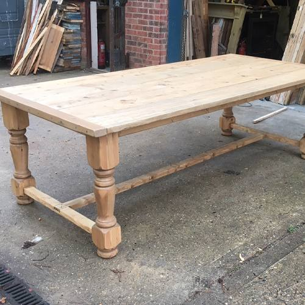
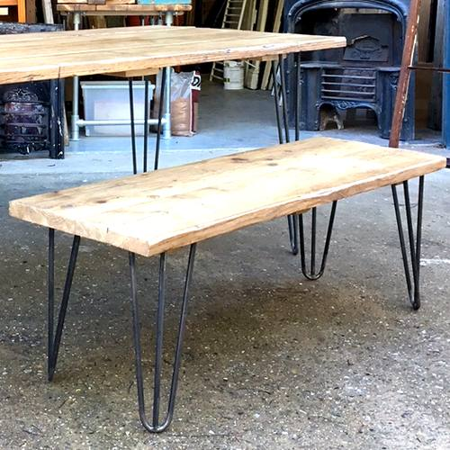
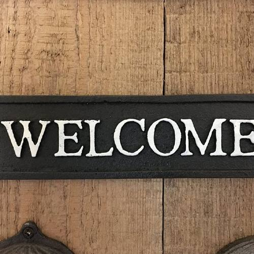
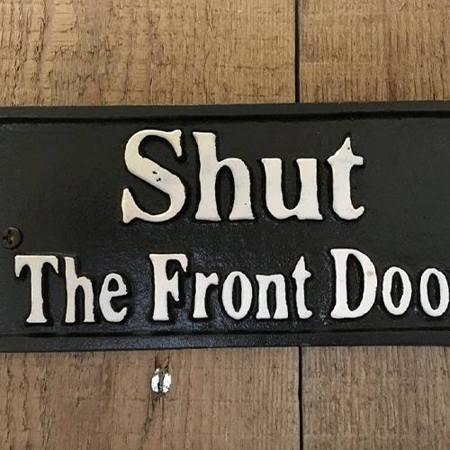

Showroom & products for sale
Visit our showroom to view our range of original period doors, handmade tables and butchers blocks, stools, architectural ironmongery and accessories.

Made and stocked here
We hold a stock of over 400 original period doors that are for sale. We also make tables, butchers blocks, stools and ledge and braced cottage doors, hand made in our workshops and made to customers' requirements, and bespoke pine tables and fire surrounds to order.
We specialise in stripping doors, but do strip some items of furniture, so please give us a call for advice on any item you would like us to paint strip.
Ironmongery & fireplaces
Cast iron hooks, racks, door wedges, toilet roll holders, signs, fireplaces, door knockers and much more. We also carry original rim locks and door handles.

Four-hook rackCast iron hooks on a stained wooden board. 
Cast iron coat hookDouble hook with acorn ends. 
Hooks on reclaimed boardTwo cast iron hooks on a rustic timber board. 
Bottle openerCast iron wall-mounted bottle opener. 
Showroom ironmongeryBrass door knobs, rim locks, cast iron brackets and hinges, a letter box and a cast iron sign. 
Cast iron fireplaceArched fireplace with grate.


To ask about ironmongery or fireplaces, call 01603 632976 or 07881 813180, email andrew.mitchell5@btconnect.com, or visit the showroom.
Doors, tables & accessories
An ever-increasing part of our business is the restoration and finishing work of doors and furniture. Original pine doors are available in various styles and sizes.

Stripped pine doorDoor with two upper openings for glass, among stock doors. 
Pair of pine doorsWith arched glazing bars (unglazed). 
Patchwork-top tablePatchwork timber top on metal hairpin legs. 
Pine dining tableLarge table with turned legs and stretchers. 
Plank table and benchPlank-top table and matching bench on metal hairpin legs.

To ask about a door size or style, or a table made to order, call 01603 632976 or 07881 813180, email andrew.mitchell5@btconnect.com, or visit the showroom.
Signage, stains & oils
We stock wooden and cast iron signs, along with a range of our own stains and oils.

“Please Close The Gate”Oval cast iron sign. 
“Welcome”Cast iron sign. 
“Shut The Front Door”Cast iron sign. 
APS wax polishTins labelled APS Wax Polish.


To ask about signs, stains or oils, call 01603 632976 or 07881 813180, email andrew.mitchell5@btconnect.com, or visit the showroom.
Come and see the range
Showroom at 2 Anson Road, Norwich Airport Industrial Estate. Mon to Fri 7.30am to 4.30pm, Sat 7.00am to 1.00pm.